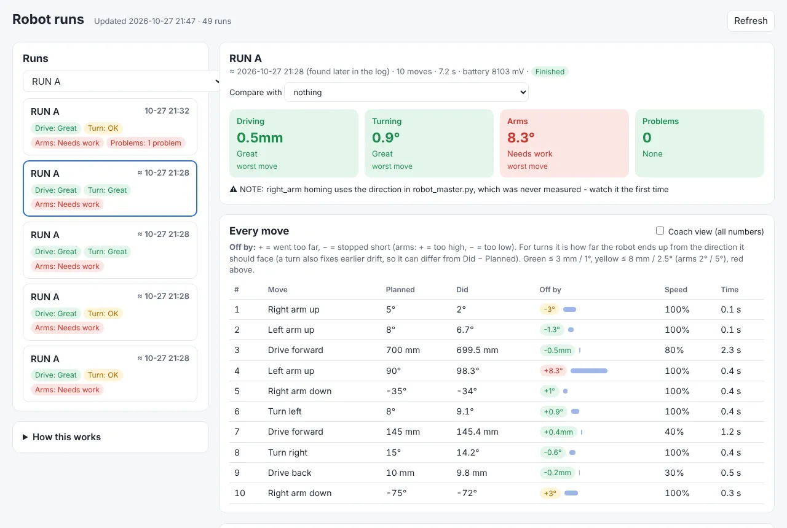

How we program: easy commands
Our coach wrote two files for us. robot_master.py does all the hard math. robot.py turns it into easy commands. We write each mission run in its own short file, using only the easy commands. Here is an example run:
from robot import *
gears(left=[20, [12, 12], 12]) # the gears on the left arm, motor first
left_arm.homing(True) # at the start, find the arm's bottom stop
start("Run 1") # hands off! checks the battery, zeroes the gyro
drive(300) # forward 300 mm (30 cm), the gyro keeps it straight
turn(90) # turn right 90 degrees
left_arm(90) # move the left arm to 90 degrees
drive(-300) # back 300 mm
finish() # relax the arms and print a summaryThe cheat sheet
The top of robot.py is a cheat sheet, so nobody has to remember every command. The main rule is easy: + means forward or right, − means backward or left.
| Command | What it does |
|---|---|
drive(mm) | Drive forward (+) or backward (−). 10 mm = 1 cm. |
turn(deg) | Turn right (+) or left (−). |
face(deg) | Turn to face a direction: 0 = where it started, 90 = right, −90 = left. |
drive(300, 50) | The same move at 50% speed. Speed is a percent: 100 = normal, 25 = slow and careful. |
left_arm(90) | Move an arm to an angle. The code works out the gears for us. |
left_arm.by(-20) | Move an arm by an amount from where it is. |
left_arm(90, wait=False) | Start the arm and keep going, so the arm moves while the robot drives. |
square() | Back gently into a wall to straighten up. |
start("Run 1") / finish() | Start and end every run. The name is what the dashboard shows. |
Arms have gears between the motor and the arm. We just type the gear teeth in order, like [20, [12, 12], 12] (two gears on the same axle go in brackets), and the code turns "move the arm to 90°" into the right number of motor degrees.
How the robot drives straight: gyro + PID
Two motors never turn at exactly the same speed, and wheels slip a little. If the robot just turned both motors on, it would curve. So robot_master.py checks and fixes the direction about every 5 milliseconds (200 times a second).
PID, explained
- P (proportional): the bigger the error, the bigger the fix. A little off = a small fix. Far off = a big fix.
- D (derivative): watch how fast the robot is turning. If it is already swinging back, ease off so it doesn't wobble from side to side.
- I (integral): if a small error stays for a long time, push a bit harder. Our arms use this (through the motor's own controller) so they don't sag under a load.
More tricks in the library
- A speed plan: every drive speeds up smoothly, cruises, then slows down to stop exactly at the distance. The code knows where the robot should be at each moment and catches up if it falls behind.
- Turns don't add up errors: every turn is measured from where the robot is supposed to be facing, not where it ended up, so a small miss doesn't grow over a run.
- Start-up checks: before a run it checks the battery and waits until the robot is perfectly still before it zeroes the gyro.
- Wall squaring:
square()backs gently into a wall until both wheels touch, which fixes any gyro drift. - Arm homing: at the start, an arm lowers gently onto its stop and calls that spot 0, so arm angles mean the same thing every run.
- Safety stops: if the robot turns way off course, or an arm gets stuck, the code stops it and prints a note instead of crashing into things.
Tuning experiments: what we tried and what we learned
The settings in robot_master.py came from a series of small test programs. Each one changes one number at a time and checks what happens.
| What was tried | What it showed |
|---|---|
| P only: drive straight and fix the direction with just P | Change only one number and watch. P was set to 12 and then "locked" before the next test. |
| Add D: P locked, only D changes | D calms the wobble that P alone can cause. |
| Smallest power test: raise the motor power a tiny bit every half second until the wheels start to move | How much power the motors need just to get going. |
| Speed test: run at 30%, 40% and 50% power and measure the speed | How speed grows with power. Together with the test above, this lets the code give the motors the power it already knows they need ("feed-forward"), and the feedback only fixes the small rest. |
| Three versions of speed control + direction fixing, then distance-based driving | Each version kept what worked and fixed what didn't, like using the feed-forward only when far from the target. |
| Built-in vs. our own: Pybricks' built-in drive code compared with a custom controller, on a 2 ft × 2 ft test area | A fair test: the same moves, two controllers. |
| Fast drive: gyro direction fixing + the smooth speed plan | This became the driving in robot_master.py. Gentle speeding up and slowing down was actually worse. |
| Arm tests: does each motor turn freely? Then arm control with two speed settings | "Precise": a 180° arm move in about 0.48 s with no overshoot. "Fast": about 0.29 s, at most 1° past the target. |
Surprises that changed the settings
- The robot overshot every distance. The motors' normal acceleration limit was too gentle, so the wheels couldn't follow the speed plan. Raising the limit fixed it.
- Our first top speed was impossible. 650 mm per second was set, but the motors top out near 540. It is now 480.
- Fast turns overshot by 2–4°. Turning speed went down from 500 to 300 degrees per second.
- The tape measure was not the best answer. One turning number measured with a tape measure was 2.73, but testing showed 2.5 works better.
- Batteries matter. Tuning was done on a charged battery, so the robot now warns us (and turns its light orange) when the battery is low.
The run dashboard: every run is logged
After every move, the robot prints one line of data: how far it really drove, what each wheel did, what the gyro says, the arm angle and the time. When we run from our laptop, a small program saves each run as a spreadsheet file (CSV), and a dashboard page shows them all.

Naming runs (like start("Run A")) groups every try of the same run together, so we can see if a change really helped. The dashboard's tip: change one setting, run the same run 3 times, then compare.
A real example: Run A, October 27
- We ran our first mission run, Run A, 5 times.
- Driving was very steady: the 700 mm drive ended between 699.5 and 700.5 mm every time.
- An arm problem showed up: the left arm, sent to 90°, was logged at 96.7° to 101.7°. The data showed the arm was counted as "done" while it was still swinging, so the next command started too early.
- The fix: now an arm move only counts as done when the arm is within 2 motor degrees of its target and has almost stopped moving.
- The right arm also got stuck on one try. It was measured 3 times with a setup program, and its homing direction was fixed the next day.
Where we are now
- The easy commands, the driving and arm library, and the run logging all work.
- Our first mission run (Run A) is written and tested. More mission runs are next.
- Both arms are set up with their gears. The right arm's range is measured; the left arm's top limit is still a placeholder.
Our next event is the NYC FIRST Founders Edition Qualifier 2 on January 10, 2027.
Our code on GitHub
- robot.py: the easy commands and the cheat sheet
- robot_master.py: gyro-straight driving, PID, arm homing, gear ratios, run logging
- run_easy_template.py and Run_A.py: a template and our first mission run
- tuning-tests/: the PID and feed-forward experiments
- robot-data/: the run saver, the dashboard and every run
- The whole 2026–27 code folder